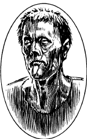

弗兰肯斯坦的怪物
弗兰肯斯坦的怪物（Frankenstein's Monster）
血肉魔像，中立邪恶
力量： 19
敏捷： 18
体质： 19
智力： 15
灵知： 15
魅力： 3
防御等级： 7
移动力： 18
等级/生命骰数：9
生命值：45
零级命中率：11
攻击次数：2
攻击/伤害：拳头（2d10/2d10）
特殊攻击：惊吓
特殊防御：对电免疫
魔法抗力：无
战斗：这个可怕的生物在战斗中是个野蛮的敌人。虽然平日里这个怪物有着过人的狡黠，但当怪物进入战斗时，他内心的无法克制的凶暴就会被点燃。巨大的愤怒驱使着这个不知痛苦和恐惧的生物。
由于他与生俱来的灵敏优雅，在战斗中的怪物会给他的敌人带来"意外之喜"。在任何遭遇战中，面对怪物的敌人的突袭检定获得-2惩罚。
弗兰肯斯坦的怪物在战斗中常用他强有力的巨拳猛击敌人。如果两次攻击都命中，且其中任意一次的命中结果为未经调整的20，怪物将会把敌人牢牢抓在手中。这时，怪物会把人类乃至更小型的敌人举在空中然后抛飞。如果附近有悬崖或是其他危险地形，受害者就会被扔向那里，否则，怪物只会把敌人丢到地上，造成2d8的伤害。不论他的攻击结果为多少，比人类体型更大的生物都不会被弗兰肯斯坦的怪物抓起。
普通的武器也能轻易伤到这个怪物，不过他极难，甚至不可能被杀死。他免疫寒冷与闪电，但燃烧的火焰可以伤害到他。法术无法对怪物造成伤害，即使是死亡一指这样可怕的法术也同样如此。法术间接造成的伤害，如火球术爆炸后燃烧的火焰，则有伤到弗兰肯斯坦的怪物的可能。像魅惑人类和幻术这样影响心灵的法术也无法对这个怪物起效。
巢穴：维多克.弗兰肯斯坦所创造的怪物没有一个固定的巢穴。他走遍了欧洲乃至世界各地的荒野，希望有朝一日能遇见一个能复制弗兰肯斯坦博士的作品，为他创造出伴侣的智者。
背景：这个可怜的生物，通常也被直接称之为怪物。是十八世纪中叶，经由臭名昭著的维多克.冯.弗兰肯斯坦博士之手诞生在这个世界上。
弗兰肯斯坦博士或许是有史以来最优秀的医学研究者之一。那过于深入的研究使他想到了一个问题：是什么，赋予了这个世界上所有生物活力？当他的大脑想到这个问题后，就再也无法将其忽视。对于狂热的弗兰肯斯坦博士来说，除真相外再无别的重要之物。愿意付出他所有的一切来发现所期望的秘密，这句话常被挂在博士的嘴边。但令他没想到的是，最后这句话真的以某种方式应验了。
最终，弗兰肯斯坦博士不但发现了驱动生命的能量，还发明了将这些能量注入无生命肉体的方法。利用这些知识，弗兰肯斯坦为自己拼装出了一头怪物。他由无数死者的尸体拼凑而成，比任何活着的人类都要更强更壮。当这份拼接工作完成后，弗兰肯斯坦为这具污秽的拼接体注入了生命。如果弗兰肯斯坦博士能提早知道红死魔为他的造物提供了能量，也许他就不会进行什么实验。又或许，他并会不在乎。
